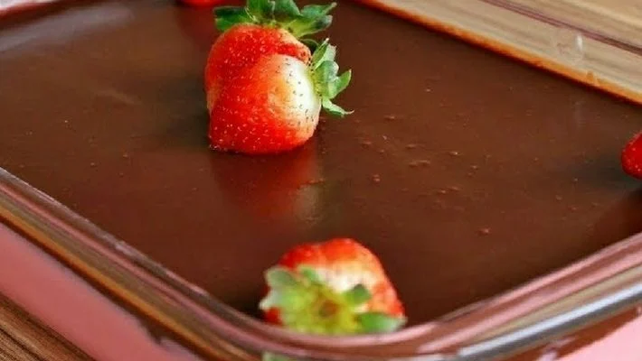

Nossas receitas

Pudim de Pão
Ingredientes:
- 4 ovos
- 1 lata de leite condensado
- 3 pães (francês)
- 1 colher de margarina
- 2 medidas de leite (medir na lata de leite condensado)
- 1/2 xícara de açúcar
- 1 xícara de açúcar para a calda
Modo de preparo:
- Misture todos os ingredientes no liquidificador e bata bem.
- Reserve.
- Em uma forma própria para pudim derreta o açúcar para fazer a calda.
- espere endurecer um pouco e coloque
o líquido que está no liquidificador.
- Leve ao fogo por uns 35 minutos ou até você enfiar um garfo e ele sair limpo.

Sensação na travessa
Ingredientes:
- 1 caixa/lata de leite condensado
- 2 caixas de creme de leite
- 1 pacote de suco em pó sabor morango
- 1 barra pequena de chocolate meio amargo ou amargo
Modo de preparo:
- Bata no liquidificador o leite condensado e o creme de leite.
- Em seguida acrescente o suco de morango aos poucos até se misturar completamente.
- Derreta o chocolate no micro-ondas ou em fogo baixo.
- Acrescente o creme de leite e misture bem.
- Coloque o mousse em um refratário e coloque na geladeira enquanto prepara a ganache.
- Deixe gelar por 2 horas e sirva.
- Quando a ganache estiver pronta, derrame ainda morna em cima do mousse.
- Se preferir decore com morangos, raspas de chocolate amargo ou folhas de hortelã.
Mousse de maracujá
Ingredientes:
- 1 lata de leite condensado
- 320 ml de suco de maracujá
- 1 lata de creme de leite sem soro
Modo de preparo:
- Em um liquidificador, bata o creme de leite, o leite condensado e o suco concentrado de maracujá.
- Em uma tigela, despeje a mistura e leve à geladeira por, no mínimo, 4 horas.

Pavê de chocolate
Ingredientes:
- 1 pacote de bolacha maisena
- 1/2 copo de leite
- 1 colher (sobremesa) da chocolate em pó
- 2 latas de leite condensado
- 2 latas de leite de vaca (use a medida da lata de leite condensado)
- 2 colheres (sobremesa) de amido de milho
- 4 gemas
- 4 colheres de chocolate em pó
- 4 claras
- 1 lata de creme de leite sem soro
- 4 colheres de açúcar
Modo de preparo:
- Em uma tigela, misture o leite e o chocolate em pó até que esteja completamente dissolvido.
- Molhe as bolachas no leite e reserve.
- Em uma panela, leve todos os ingredientes ao fogo médio e misture até obter uma consistência grossa e
cremosa.
- Repita o processo feito no creme branco.
- Bata as claras em neve com o açúcar até obter um creme consistente, adicione o creme de leite e misture
delicadamente.
- Em um refratário grande, despeje o creme branco, metade das bolachas, creme de chocolate, bolachas e
claras em neve.
- Repita o processo até preencher todo o refratário e leve à geladeira por 40 minutos.